คู่มือใช้งานเครื่องมือ · ระดับ Free
โหลดความเย็นและเลือกเครื่องปรับอากาศ
Cooling Load & HVAC Selector
FREE
สำหรับช่างเทคนิคที่เพิ่งเริ่มงาน — อ่านแล้วทำตามได้เอง
ใช้เวลาฝึกประมาณ 45 นาที
เคสตัวอย่าง: โรงงาน A ห้องสำนักงาน 4 × 6 m 3 คน
อ.หนึ่ง กลับทวี / Aj. Nueng Klubtavee
tripleeenergytools.com
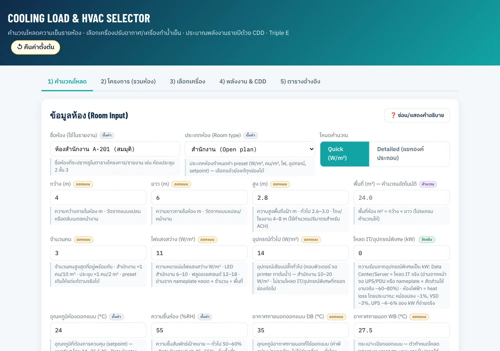
หน้าจอเครื่องมือ — เปิดได้จากเมนู Free ของเว็บไซต์
รุ่นเครื่องมือ: Free commit 134a213 · จับภาพ 25 พ.ย. 2569 · คู่มือ Rev01
เครื่องมือนี้ตอบคำถามอะไร
คู่มือใช้งาน · คำนวณโหลดความเย็นและเลือกเครื่องปรับอากาศ (Cooling Load & HVAC Selector) · ระดับ Free
2 / 28
| คำถามหน้างาน | ใช้แท็บไหน | เคสโรงงาน A ได้ |
|---|---|---|
| ห้องนี้ต้องการความเย็นเท่าไร (ประมาณเร็ว) | ① คำนวณโหลด · Quick | 5 kW · 17,115 BTU/hr |
| คิดละเอียดแยกผนัง กระจก คน อากาศระบาย | ① คำนวณโหลด · Detailed | 5.7 kW · 19,397 BTU/hr |
| ต้องเติมอากาศบริสุทธิ์เท่าไร | ① ช่อง Rp · Ra | Vbz 14.7 L/s |
| รวมหลายห้อง ระบบรวมขนาดเท่าไร | ② โครงการ | 5.1 kW (× diversity 0.9) |
| ควรใช้เครื่องแบบไหน ขนาดเท่าไร | ③ เลือกเครื่อง | Split inverter 24,000 BTU/hr |
| เครื่องแต่ละแบบใช้ไฟปีละเท่าไร | ④ พลังงาน & CDD | 2,765–4,385 kWh/ปี |
💡 เคล็ดลับ
แท็บ ① ไม่มีปุ่มคำนวณ — พิมพ์แล้วผลเปลี่ยนทันที · แท็บ ② ต้องกด เพิ่มห้องนี้เข้าโครงการ ก่อน
แผนที่หน้าจอ
คู่มือใช้งาน · คำนวณโหลดความเย็นและเลือกเครื่องปรับอากาศ (Cooling Load & HVAC Selector) · ระดับ Free
3 / 28
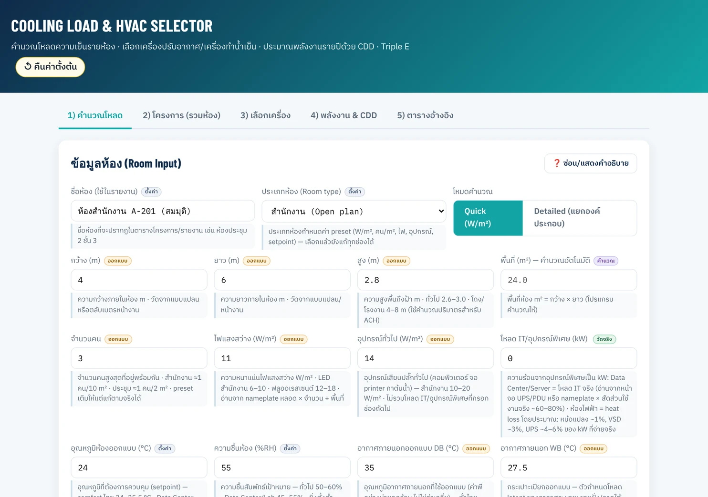
1
2
3
4
1
5 แท็บ: คำนวณโหลด · โครงการ · เลือกเครื่อง · พลังงาน & CDD · ตารางอ้างอิง
2
ประเภทห้อง — โหลดค่าตั้งต้นของห้องแบบนั้น
3
โหมดคำนวณ: Quick (W/m²) หรือ Detailed
4
ซ่อน / แสดงคำอธิบายใต้ช่องกรอก
ใต้ช่องกรอกแต่ละช่องมีคำอธิบายสีเทา และป้ายชนิดค่า (ออกแบบ · ตั้งค่า · วัดจริง)
ผลการคำนวณอยู่ในการ์ดถัดลงไปในแท็บเดียวกัน
💡 เคล็ดลับ
เลือกประเภทห้องก่อน แล้วค่อยแก้ช่องอื่น — เปลี่ยนประเภทห้องทีหลัง ค่าที่แก้ไว้จะถูกแทนด้วยค่าตั้งต้น
เปิดบนมือถือ และสลับภาษา
คู่มือใช้งาน · คำนวณโหลดความเย็นและเลือกเครื่องปรับอากาศ (Cooling Load & HVAC Selector) · ระดับ Free
4 / 28
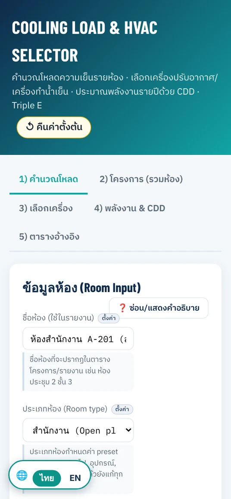
ใช้บนมือถือได้ — ช่องกรอกเรียงเป็นคอลัมน์เดียว แถบแท็บตัดเป็นหลายบรรทัดพอดีจอ
ตารางที่กว้างกว่าจอ (แท็บ ② ④ ⑤) เลื่อนซ้าย-ขวาในกรอบของตาราง — หน้าเว็บไม่กว้างเกินจอ
ปุ่ม ไทย | EN ลอยอยู่ด้านล่าง กดสลับภาษาได้ ค่าที่กรอกไม่หาย
โครงการหลายห้องบันทึกเป็นไฟล์ JSON ได้ที่แท็บ ②
⚠️ ระวัง
ปิดหน้าเว็บแล้วรายการห้องในโครงการหาย — บันทึก JSON ก่อนปิดทุกครั้ง
คำศัพท์ 8 คำที่ต้องรู้ก่อนเริ่ม
คู่มือใช้งาน · คำนวณโหลดความเย็นและเลือกเครื่องปรับอากาศ (Cooling Load & HVAC Selector) · ระดับ Free
5 / 28
| คำ | ความหมายแบบสั้น | จำง่าย ๆ |
|---|---|---|
| kW · BTU/hr · TR | หน่วยของภาระความเย็น | 1 TR = 12,000 BTU/hr ≈ 3.517 kW |
| Sensible · Latent | ความร้อนที่ทำให้อุณหภูมิขึ้น · ความร้อนจากความชื้น | คน อากาศภายนอก มี latent |
| SHR | สัดส่วน sensible ต่อโหลดรวม | ห้องคนแน่น SHR ต่ำ |
| W/m² | โหลดต่อพื้นที่ห้อง | ใช้ประมาณเร็วและเช็กผล |
| Safety factor | ส่วนเผื่อความไม่แน่นอนของข้อมูล | ปกติ 10 % |
| Rp · Ra · Vbz | อากาศระบายต่อคน · ต่อพื้นที่ · รวมของห้อง (ASHRAE 62.1) | Vbz = Rp·Pz + Ra·Az |
| ACH | จำนวนเท่าของปริมาตรห้องที่อากาศรั่วเข้าต่อชั่วโมง | ห้องปิดดี 0.2–0.3 |
| Diversity | สัดส่วนโหลดที่เกิดพร้อมกันจริงของหลายห้อง | 0.7–1.0 |
💡 เคล็ดลับ
Pz = จำนวนคน · Az = พื้นที่ห้อง — อากาศระบายมีสองส่วน: ส่วนที่ขึ้นกับคน และส่วนที่ขึ้นกับพื้นที่
เตรียมข้อมูลก่อนเริ่ม
คู่มือใช้งาน · คำนวณโหลดความเย็นและเลือกเครื่องปรับอากาศ (Cooling Load & HVAC Selector) · ระดับ Free
6 / 28
| ข้อมูล | แหล่ง | โรงงาน A |
|---|---|---|
| ขนาดห้อง กว้าง × ยาว × สูง | แบบสถาปัตย์ หรือวัดหน้างาน | 4 × 6 × 2.8 m |
| จำนวนคนสูงสุดที่อยู่พร้อมกัน | ผู้ใช้ห้อง / ผังที่นั่ง | 3 คน |
| ไฟแสงสว่าง · อุปกรณ์ · IT | ผังไฟ · รายการอุปกรณ์ · nameplate | 11 · 14 W/m² · IT 0 kW |
| สภาวะในห้องที่ต้องการ | ผู้ใช้ห้อง / มาตรฐานงาน | 24 °C · 55 %RH |
| สภาวะอากาศภายนอกออกแบบ | แท็บ ④ หรือข้อมูลอากาศจังหวัด | 35 °C DB · 27.5 °C WB |
| ผนังที่โดนแดด · กระจกแต่ละทิศ · หลังคา | เดินดูหน้างาน (โหมด Detailed) | ผนัง 4 ด้าน · กระจกทิศ E 2 m² |
⚠️ ระวัง
จำนวนคนให้ใช้จำนวนสูงสุดที่อยู่พร้อมกัน — ไม่ใช่จำนวนพนักงานในแผนก
ขั้นที่ 1
แท็บ ①: ข้อมูลห้อง
คู่มือใช้งาน · คำนวณโหลดความเย็นและเลือกเครื่องปรับอากาศ (Cooling Load & HVAC Selector) · ระดับ Free
7 / 28
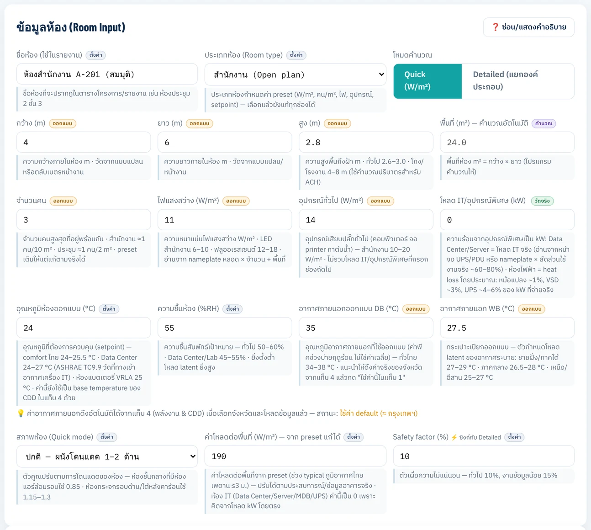
1
2
3
4
5
6
7
8
9
1
ชื่อห้อง (ใช้ในรายงาน)
2
ประเภทห้อง: สำนักงาน (Open plan)
3
โหมด: Quick / Detailed
4
ขนาดห้อง 4 × 6 × 2.8 m → พื้นที่ 24.0 m²
5
จำนวนคน 3 (เติมให้จากพื้นที่ ÷ m²/คน)
6
โหลด IT (kW) — ห้อง Server / Data Center
7
ในห้อง 24 °C · 55 %RH
8
นอก 35 °C DB · 27.5 °C WB
9
ช่องของ Quick: สภาพห้อง · W/m² · Safety
ไฟ 11 W/m² และอุปกรณ์ 14 W/m² มาจากค่าตั้งต้นของประเภทห้อง — แก้ได้
ขั้นที่ 2
ผลโหมด Quick
คู่มือใช้งาน · คำนวณโหลดความเย็นและเลือกเครื่องปรับอากาศ (Cooling Load & HVAC Selector) · ระดับ Free
8 / 28
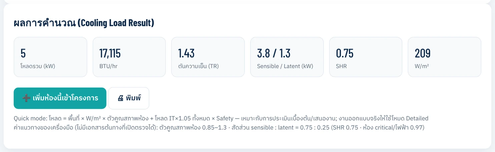
1
2
3
4
5
1
โหลดรวม 5 kW
2
17,115 BTU/hr · 1.43 TR
3
SHR 0.75 (sensible / latent 3.8 / 1.3 kW)
4
209 W/m²
5
บรรทัดสมมุติฐานของโหมด + บรรทัดค่าแนวทางของเครื่องมือ (สีเทา)
Quick = พื้นที่ × W/m² × ตัวคูณสภาพห้อง × (1 + Safety)
ทวนมือ: 24.0 × 190 × 1.0 × 1.10 = 5,016 W
Quick ใช้ประเมินเบื้องต้นหรือเสนองาน — งานออกแบบจริงใช้ Detailed
⚠️ ระวัง
บรรทัดที่ 2 บนจอ: ค่าแนวทางของเครื่องมือ (ไม่มีเอกสารต้นทางที่เปิดตรวจได้): ตัวคูณสภาพห้อง 0.85–1.3 · สัดส่วน sensible : latent = 0.75 : 0.25 (SHR 0.75 · ห้อง critical/ไฟฟ้า 0.97) — ค่าเหล่านี้เป็นค่าตั้งต้นของเครื่องมือ ไม่ใช่ค่าจากมาตรฐาน
ลองเปลี่ยนค่า (What-if): สภาพห้องในโหมด Quick
คู่มือใช้งาน · คำนวณโหลดความเย็นและเลือกเครื่องปรับอากาศ (Cooling Load & HVAC Selector) · ระดับ Free
9 / 28
| สภาพห้อง (ตัวคูณ) | โหลด (kW) | BTU/hr | W/m² |
|---|---|---|---|
| โดนแดดน้อย / ชั้นกลาง ห้องใน (× 0.85) | 4.3 | 14,548 | 178 |
| ปกติ — ผนังโดนแดด 1–2 ด้าน (× 1.0) โรงงาน A | 5 | 17,115 | 209 |
| โดนแดดมาก / กระจกเยอะ (× 1.15) | 5.8 | 19,683 | 240 |
| ชั้นบนสุด หลังคาไม่มีฉนวน / กระจกรอบด้าน (× 1.3) | 6.5 | 22,250 | 272 |
ทำเอง: เปลี่ยนช่อง "สภาพห้อง" → อ่านโหลด → เปลี่ยนกลับ
ห้องเดียวกันต่างกันได้ถึง 14,548–22,250 BTU/hr — เดินดูหน้างานก่อนเลือกสภาพห้อง
ขั้นที่ 3
โหมด Detailed: กรอบอาคาร
คู่มือใช้งาน · คำนวณโหลดความเย็นและเลือกเครื่องปรับอากาศ (Cooling Load & HVAC Selector) · ระดับ Free
10 / 28
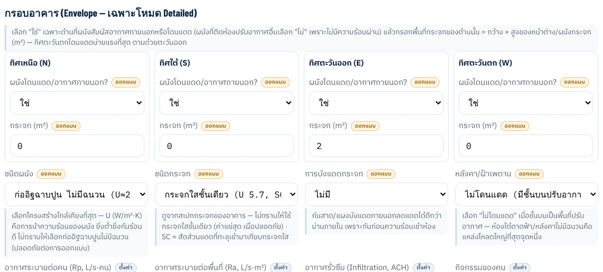
1
2
3
4
5
1
ผนังแต่ละทิศ โดนอากาศภายนอกหรือไม่ · พื้นที่กระจก
2
ชนิดผนัง (ค่า U)
3
ชนิดกระจก (U · SC)
4
การบังแดดกระจก
5
หลังคา / ฝ้าเพดาน
โรงงาน A: ผนังทั้ง 4 ทิศติดอากาศภายนอก · กระจกทิศตะวันออก 2 m² · ผนังก่ออิฐไม่มีฉนวน
ผนังที่ติดห้องปรับอากาศอื่นให้เลือก "ไม่" — ไม่นับเป็นภาระความเย็น
หลังคา "ไม่โดนแดด" = มีชั้นบนที่ปรับอากาศ
ขั้นที่ 4
โหมด Detailed: อากาศระบาย คน และ Safety
คู่มือใช้งาน · คำนวณโหลดความเย็นและเลือกเครื่องปรับอากาศ (Cooling Load & HVAC Selector) · ระดับ Free
11 / 28
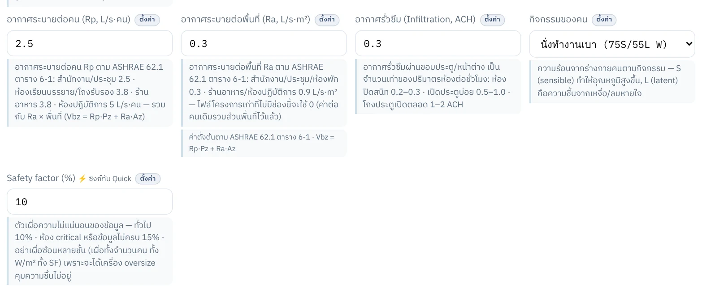
1
2
3
4
5
6
1
Rp 2.5 L/s·คน — อากาศระบายต่อคน
2
Ra 0.3 L/s·m² — อากาศระบายต่อพื้นที่
3
ป้ายที่มา: ค่าตั้งต้นตาม ASHRAE 62.1 ตาราง 6-1 · Vbz = Rp·Pz + Ra·Az
4
อากาศรั่วซึม 0.3 ACH
5
กิจกรรมของคน (W ต่อคน sensible / latent)
6
Safety factor (ซิงก์กับช่องในโหมด Quick)
อากาศระบายคิดสองส่วน: ส่วนต่อคน + ส่วนต่อพื้นที่ — ตามสูตร ASHRAE 62.1
ป้ายใต้ช่อง Ra บอกว่าค่าตั้งต้นมาจากตาราง ASHRAE 62.1 หรือเป็นค่าแนวทางของเครื่องมือ
คิดอากาศระบายด้วยมือ: โรงงาน A
คู่มือใช้งาน · คำนวณโหลดความเย็นและเลือกเครื่องปรับอากาศ (Cooling Load & HVAC Selector) · ระดับ Free
12 / 28
| ค่า | สูตร | แทนค่า | ผล |
|---|---|---|---|
| อากาศระบาย Vbz | Rp × คน + Ra × พื้นที่ | 2.5 × 3 + 0.3 × 24.0 | 14.7 L/s |
| อากาศรั่วซึม | ACH × ปริมาตร ÷ 3.6 | 0.3 × (4 × 6 × 2.8) ÷ 3.6 | 5.6 L/s |
| รวม V | Vbz + รั่วซึม | 14.7 + 5.6 | 20.3 L/s |
| Qs (sensible) | 1.2 × V × (T นอก − T ใน) | 1.2 × 20.3 × (35 − 24) | 268 W |
| Ql (latent) | 3,010 × V × Δw | Δw = 0.0202 − 0.0102 kg/kg | หน้าจอ 0.61 kW |
Qs 268 W ตรงกับแถว "อากาศระบาย+รั่วซึม — sensible" บนจอ 0.27 kW
Ql ทวนด้วยสูตรไซโครเมตริก ASHRAE (นอก 35/27.5 °C · ใน 24 °C 55 %RH) ได้ 607 W ตรงกับจอ
💡 เคล็ดลับ
เครื่องมือไม่แสดงอัตรา L/s บนจอ — คิดตามตารางนี้เมื่อต้องระบุขนาดพัดลมเติมอากาศ
ขั้นที่ 5
ผลโหมด Detailed
คู่มือใช้งาน · คำนวณโหลดความเย็นและเลือกเครื่องปรับอากาศ (Cooling Load & HVAC Selector) · ระดับ Free
13 / 28
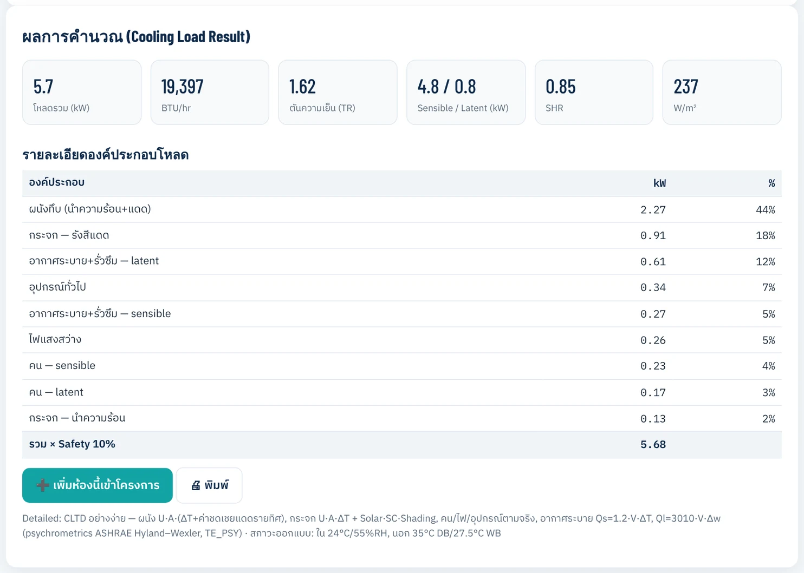
1
2
3
4
1
โหลดรวม 5.7 kW · 19,397 BTU/hr · 1.62 TR
2
Sensible / Latent 4.8 / 0.8 kW · SHR 0.85
3
ตารางองค์ประกอบโหลด เรียงจากมากไปน้อย
4
ปุ่มเพิ่มห้องนี้เข้าโครงการ (ไปแท็บ ②)
ก้อนใหญ่สุด: ผนังทึบ 2.27 kW · กระจกรับแดด 0.91 kW · อากาศระบาย latent 0.61 kW
คน + ไฟ + อุปกรณ์ รวมกันราว 1 kW — ห้องนี้โหลดมาจากกรอบอาคารเป็นหลัก
Detailed ได้ 5.7 kW สูงกว่า Quick 5 kW — Detailed กรอกผนังติดภายนอกทั้ง 4 ด้าน ส่วน Quick เลือกสภาพ "โดนแดด 1–2 ด้าน"
⚠️ ระวัง
ใต้ตารางมีบรรทัดค่าแนวทางของเครื่องมือของโหมด Detailed: ค่าชดเชยแดดผนัง · รังสีแดดผ่านกระจก · ค่าเผื่อแดดของหลังคา — ดูสไลด์ถัดไป
ค่าแนวทางของเครื่องมือในโหมด Detailed
คู่มือใช้งาน · คำนวณโหลดความเย็นและเลือกเครื่องปรับอากาศ (Cooling Load & HVAC Selector) · ระดับ Free
14 / 28
| ค่าที่ใช้ในสูตร | ใช้ที่ไหน | ทำไม |
|---|---|---|
| ค่าชดเชยแดดของผนังรายทิศ (K) | ผนังทึบ U·A·(ΔT + ค่าชดเชย) | ผิวนอกที่โดนแดดร้อนกว่าอากาศ (sol-air) |
| รังสีแดดผ่านกระจกรายทิศ (W/m²) | กระจก — รังสีแดด × SC × บังแดด | ทิศ W/E รับแดดมากกว่าทิศ N |
| ค่าเผื่อแดดของหลังคา/ฝ้า (K) | หลังคา U·A·(ΔT + ค่าเผื่อ) | ผิวหลังคารับแดดตลอดวัน |
ข้อความบนจอ: ค่าแนวทางของเครื่องมือ (ไม่มีเอกสารต้นทางที่เปิดตรวจได้): ค่าชดเชยแดดของผนัง N/S/E/W = 2/6/9/10 K · รังสีแดดผ่านกระจก N/S/E/W = 130/300/480/520 W/m² · หลังคา/ฝ้า U·A·(ΔT + 20 K) — ค่าชดเชยแดดแทนผลที่ผิวนอกซึ่งโดนแดดร้อนกว่าอากาศ (แนวคิด sol-air temperature)
เครื่องมือกำกับว่าเป็นค่าแนวทางของเครื่องมือ (ไม่มีเอกสารต้นทางที่เปิดตรวจได้) — ใช้ประเมินเบื้องต้นได้ งานที่ต้องรับรองให้ใช้ค่าตามแบบและมาตรฐานของงาน
💡 เคล็ดลับ
ตารางองค์ประกอบบอกว่าควรแก้ที่ไหนก่อน — เช่น ฉนวนผนัง หรือบังแดดกระจก
ลองเปลี่ยนค่า (What-if): โหมด Detailed
คู่มือใช้งาน · คำนวณโหลดความเย็นและเลือกเครื่องปรับอากาศ (Cooling Load & HVAC Selector) · ระดับ Free
15 / 28
| เปลี่ยนค่า | โหลด (kW) | BTU/hr | SHR | W/m² |
|---|---|---|---|---|
| โรงงาน A (กระจก E 2 m² · ผนังไม่มีฉนวน) | 5.7 | 19,397 | 0.85 | 237 |
| ไม่มีกระจก | 4.6 | 15,848 | 0.82 | 194 |
| กระจก E 6 m² | 7.8 | 26,493 | 0.89 | 324 |
| กันสาด + ม่าน | 5.3 | 18,027 | 0.84 | 220 |
| ผนังก่ออิฐ + ฉนวน (U≈0.9) | 4.2 | 14,222 | 0.80 | 174 |
| ดาดฟ้า คสล. ไม่มีฉนวน | 7.7 | 26,378 | 0.89 | 322 |
| คน 6 คน (Vbz 22.2 L/s) | 6.5 | 22,074 | 0.80 | 270 |
ฉนวนผนังลดโหลดได้มากที่สุดในชุดนี้ · ห้องใต้ดาดฟ้าไม่มีฉนวนเพิ่มโหลดเกือบเท่ากระจก 6 m²
เพิ่มคน: latent เพิ่ม SHR ลด — ต้องเลือกเครื่องที่ดึงความชื้นได้พอ
ป้าย "ค่าแนวทางของเครื่องมือ" (ห้อง Server)
คู่มือใช้งาน · คำนวณโหลดความเย็นและเลือกเครื่องปรับอากาศ (Cooling Load & HVAC Selector) · ระดับ Free
16 / 28
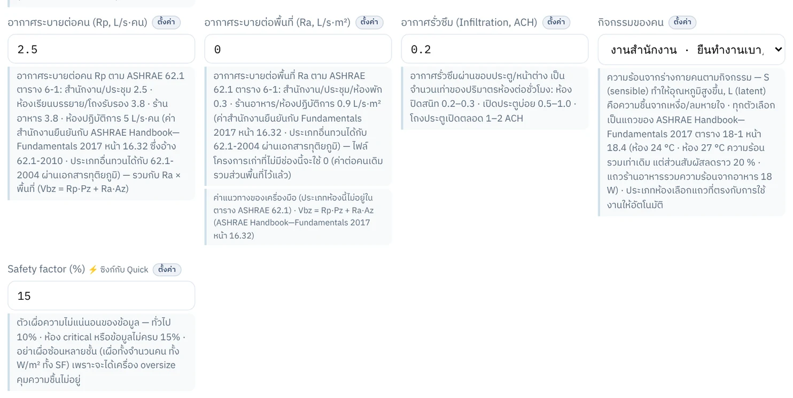
1
2
1
Ra = 0 · Rp 2.5 L/s·คน
2
ป้าย: ค่าแนวทางของเครื่องมือ (ประเภทห้องนี้ไม่อยู่ในตาราง ASHRAE 62.1)
ห้อง Server · Data Center · MDB · UPS · คลินิก · โซนผลิต · ห้องนอน ไม่อยู่ในตาราง 6-1 — เครื่องมือใส่ค่าแนวทางให้
ห้องที่อยู่ในตาราง: ห้องเรียน Rp 3.8 Ra 0.3 → Vbz 45.2 L/s · ร้านอาหาร Rp 3.8 Ra 0.9 → Vbz 78.6 L/s
เห็นป้ายค่าแนวทาง ให้ตรวจข้อกำหนดของงานนั้น (เช่น มาตรฐานโรงพยาบาล) ก่อนใช้
⚠️ ระวัง
ห้อง Server: โหลดเกือบทั้งหมดมาจาก IT 8 kW (SHR 0.98) — กรอก IT kW จากค่าจริง
ห้อง Server ที่ยังไม่กรอกโหลด IT: ไม่แนะนำเครื่อง
คู่มือใช้งาน · คำนวณโหลดความเย็นและเลือกเครื่องปรับอากาศ (Cooling Load & HVAC Selector) · ระดับ Free
17 / 28
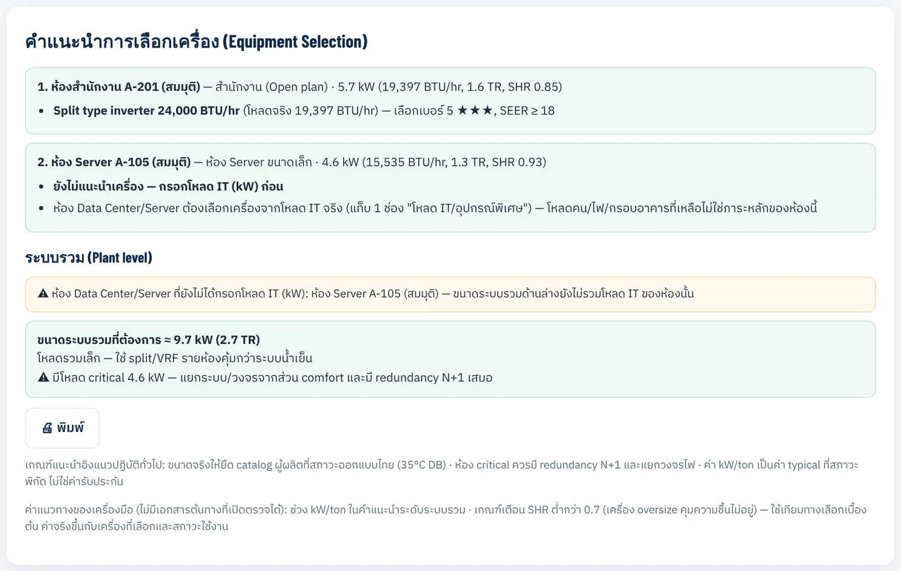
1
2
3
1
ห้อง A-201: คำแนะนำเครื่องตามเดิม
2
ห้อง Server A-105 (สมมุติ) · IT = 0 kW → ยังไม่แนะนำเครื่อง — กรอกโหลด IT (kW) ก่อน
3
กล่องเตือนระบบรวม: บอกชื่อห้องที่ยังไม่มีโหลด IT
ห้อง Server / Data Center โหลดหลักคืออุปกรณ์ IT — ไม่มีค่า IT เครื่องมือจึงไม่เลือกขนาดเครื่องให้ (โหลดที่เหลือ 4.6 kW มาจากคน ไฟ กรอบอาคาร)
โครงการที่มีห้องอื่นปน: ขนาดระบบรวม 9.7 kW (2.7 TR) ยังไม่รวมโหลด IT ของห้องนั้น
ห้อง Server ห้องเดียวและ IT = 0: แท็บ ③ ขึ้น "⚠ ยังไม่แนะนำขนาดระบบรวม — ห้อง Data Center/Server ยังไม่ได้กรอกโหลด IT (kW)" — ไม่แนะนำทั้งเครื่องรายห้องและระบบรวม
แท็บ ① ก็เตือนแล้ว: ⚠ Data Center/Server ต้องกรอกโหลด IT (kW) — โหลดหลักมาจากอุปกรณ์ IT
⚠️ ระวัง
กรอก IT kW จากค่าจริง (มิเตอร์ UPS / PDU หรือรายการอุปกรณ์) → ลบรายการเดิมในแท็บ ② แล้วเพิ่มห้องเข้าโครงการใหม่ — เครื่องมือจึงแนะนำเครื่อง
ขั้นที่ 6
แท็บ ②: โครงการ (รวมหลายห้อง)
คู่มือใช้งาน · คำนวณโหลดความเย็นและเลือกเครื่องปรับอากาศ (Cooling Load & HVAC Selector) · ระดับ Free
18 / 28
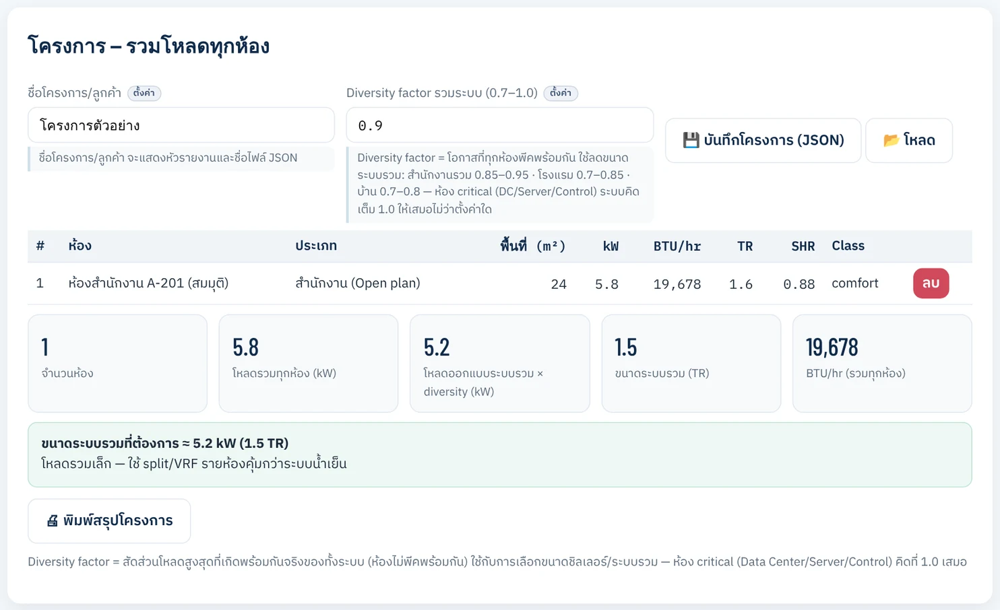
1
2
3
4
1
ตารางห้องที่เพิ่มเข้าโครงการ (ลบรายห้องได้)
2
Diversity factor 0.9
3
รวม 5.7 kW · ออกแบบระบบรวม 5.1 kW · 1.5 TR
4
คำแนะนำระบบรวม
ใส่ห้องได้หลายห้อง: คำนวณห้องที่ 1 → เพิ่ม → แก้เป็นห้องที่ 2 → เพิ่ม
ระบบรวม = ผลรวมทุกห้อง × diversity — ใช้กับระบบน้ำเย็นหรือ VRF ที่จ่ายหลายห้อง
เครื่องรายห้อง (split) ต้องเลือกตามโหลดของห้องนั้น ไม่ใช้ diversity
💡 เคล็ดลับ
ปุ่มบันทึกโครงการ (JSON) อยู่ด้านขวาบนของการ์ด — โหลดกลับมาแก้ต่อได้
ขั้นที่ 7
แท็บ ③: เลือกเครื่อง
คู่มือใช้งาน · คำนวณโหลดความเย็นและเลือกเครื่องปรับอากาศ (Cooling Load & HVAC Selector) · ระดับ Free
19 / 28
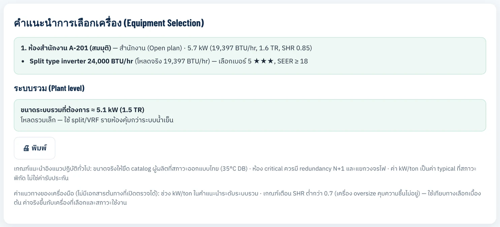
1
2
1
คำแนะนำรายห้อง: ขนาดเครื่อง และระดับประสิทธิภาพ
2
คำแนะนำระบบรวม (Plant level)
ห้อง A-201 โหลด 19,397 BTU/hr → Split type inverter 24,000 BTU/hr เบอร์ 5 ★★★ SEER ≥ 18
เครื่องมือเลือกขนาดมาตรฐานถัดขึ้นไปจากโหลดจริง
ขนาดจริงให้ยึด catalog ผู้ผลิตที่สภาวะออกแบบไทย (35 °C DB)
ย่อหน้าล่างสุดของแท็บ: ค่าแนวทางของเครื่องมือ (ไม่มีเอกสารต้นทางที่เปิดตรวจได้): ช่วง kW/ton ในคำแนะนำระดับระบบรวม · เกณฑ์เตือน SHR ต่ำกว่า 0.7 (เครื่อง oversize คุมความชื้นไม่อยู่) — ใช้เทียบทางเลือกเบื้องต้น ค่าจริงขึ้นกับเครื่องที่เลือกและสภาวะใช้งาน
ขั้นที่ 8
แท็บ ④: พลังงานรายปีและเทียบทางเลือก
คู่มือใช้งาน · คำนวณโหลดความเย็นและเลือกเครื่องปรับอากาศ (Cooling Load & HVAC Selector) · ระดับ Free
20 / 28
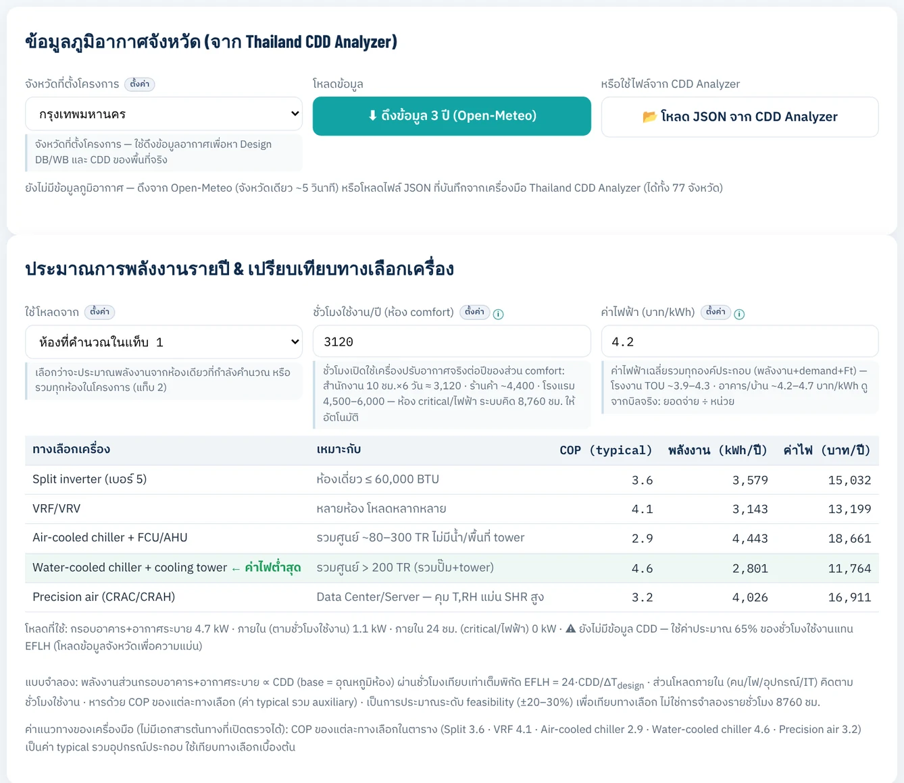
1
2
3
4
5
6
7
1
จังหวัดที่ตั้งโครงการ
2
ดึงข้อมูลอากาศ 3 ปีจาก Open-Meteo (ต้องต่ออินเทอร์เน็ต)
3
หรือโหลดไฟล์ JSON จากเครื่องมือ Thailand CDD Analyzer
4
สถานะข้อมูลอากาศ
5
ชั่วโมงใช้งาน/ปี 3120
6
ค่าไฟ 4.2 บาท/kWh
7
ตารางพลังงานและค่าไฟของ 5 ทางเลือก
Split inverter (COP 3.6) 3,533 kWh/ปี = 14,837 บาท · VRF (COP 4.1) 3,102 kWh/ปี
ภาพนี้ยังไม่ได้โหลดข้อมูลอากาศ: ⚠ ยังไม่มีข้อมูล CDD — ใช้ค่าประมาณ 65% ของชั่วโมงใช้งานแทน EFLH (โหลดข้อมูลจังหวัดเพื่อความแม่น)
ผลเป็นการประมาณระดับเทียบทางเลือก (±20–30 %) ไม่ใช่การจำลองรายชั่วโมง
COP ในตารางเป็นค่าแนวทางของเครื่องมือ (ย่อหน้าล่างสุดของการ์ด)
บันทึก / เปิดไฟล์งาน: สถานะสภาวะออกแบบของจังหวัดคงอยู่
คู่มือใช้งาน · คำนวณโหลดความเย็นและเลือกเครื่องปรับอากาศ (Cooling Load & HVAC Selector) · ระดับ Free
21 / 28
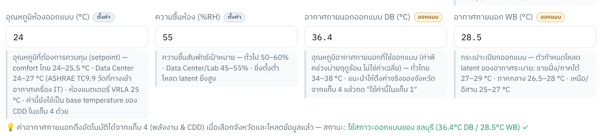
1
2
3
1
DB ภายนอก 36.4 °C (จากข้อมูลจังหวัด)
2
WB ภายนอก 28.5 °C
3
สถานะสีเขียว: ใช้สภาวะออกแบบของ ชลบุรี (36.4°C DB / 28.5°C WB) ✓
ขั้นที่ทำ: แท็บ ④ โหลด JSON จาก CDD Analyzer → เลือกจังหวัด → ✔ ใช้ค่านี้ในแท็บ 1 → คำนวณ → 💾 บันทึกโครงการ
เปิดไฟล์งานนี้ใหม่ (แท็บ ② ปุ่ม 📂 โหลด) → สถานะยังบอกจังหวัดและค่า DB/WB ที่ใช้ — ไม่กลับเป็น "ใช้ค่า default"
ข้อมูลอากาศมากับไฟล์ด้วย: โหลดข้อมูลภูมิอากาศจากไฟล์โครงการ (ชลบุรี, 1339 วัน) ✓
ไฟล์งานรุ่นเก่า (ก่อนมีสถานะนี้) ยังเปิดได้ ค่าทุกช่องเท่าเดิม
💡 เคล็ดลับ
ภาพนี้เป็นเคสโรงงาน A ตั้งที่ชลบุรี (แต่งขึ้นเพื่อการสอน) — ข้อมูลอากาศจากไฟล์ JSON ของเครื่องมือ Thailand CDD Analyzer
ขั้นที่ 9
แท็บ ⑤: ตารางอ้างอิง
คู่มือใช้งาน · คำนวณโหลดความเย็นและเลือกเครื่องปรับอากาศ (Cooling Load & HVAC Selector) · ระดับ Free
22 / 28
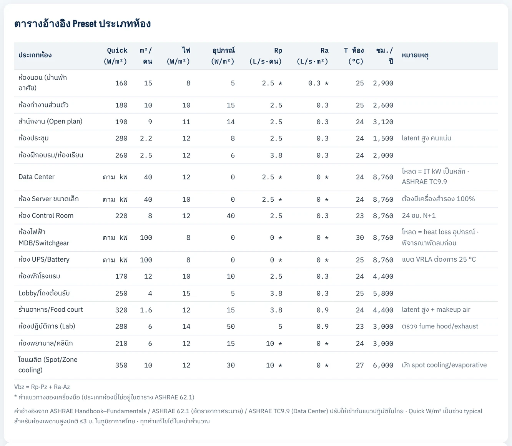
1
2
3
1
Rp (L/s·คน) ของแต่ละประเภทห้อง
2
Ra (L/s·m²) ของแต่ละประเภทห้อง
3
เครื่องหมาย * = ค่าแนวทางของเครื่องมือ (ไม่อยู่ในตาราง ASHRAE 62.1)
ใช้ดูค่าตั้งต้นของทุกประเภทห้องก่อนเลือก: W/m² · m²/คน · ไฟ · อุปกรณ์ · อุณหภูมิห้อง · ชั่วโมงใช้งาน
การ์ดถัดลงไป: เกณฑ์เลือกประเภทเครื่อง (ช่วงขนาด · ประสิทธิภาพ typical · ข้อควรระวัง)
ใต้ตารางเกณฑ์เลือกเครื่อง: ค่าแนวทางของเครื่องมือ (ไม่มีเอกสารต้นทางที่เปิดตรวจได้): ช่วงขนาดและประสิทธิภาพ typical ในตารางนี้ (SEER · COP · kW/ton · SHR) — ใช้เทียบทางเลือกเบื้องต้น
คำเตือน: W/m² นอกช่วงปกติ
คู่มือใช้งาน · คำนวณโหลดความเย็นและเลือกเครื่องปรับอากาศ (Cooling Load & HVAC Selector) · ระดับ Free
23 / 28
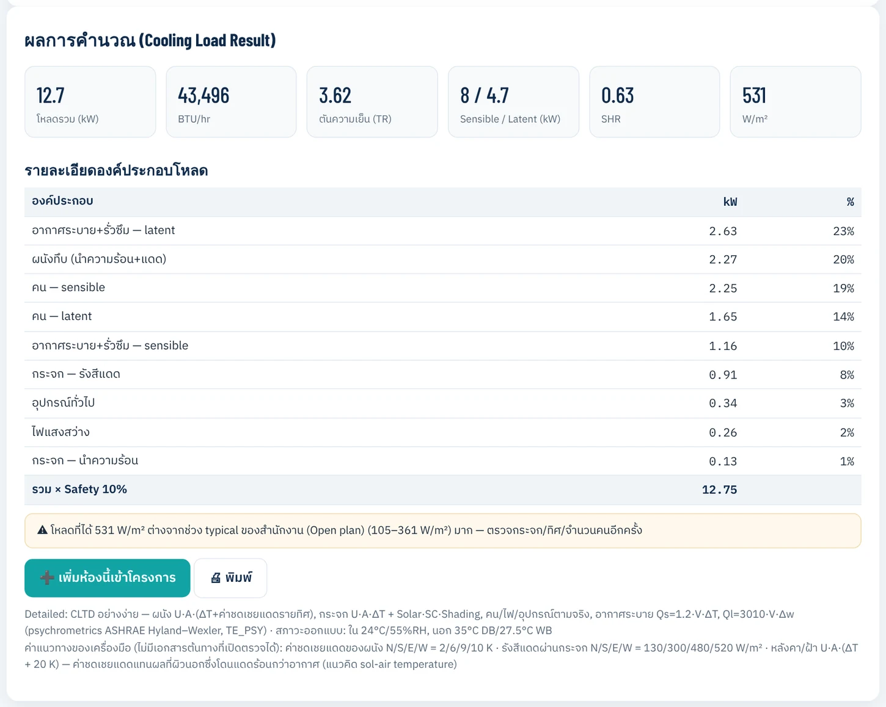
1
2
1
กรอกคน 30 คนในห้อง 24 m² → 531 W/m² · 12.7 kW
2
กล่องเตือน: ต่างจากช่วง typical ของประเภทห้องมาก
เครื่องมือเทียบ W/m² กับช่วง typical ของประเภทห้องที่เลือก
เห็นกล่องนี้ ให้ตรวจ จำนวนคน · พื้นที่กระจก · ทิศ · ประเภทห้อง อีกครั้ง
ถ้าค่าถูกจริง (เช่น ห้องคนแน่นมาก) ใช้ผลได้ แต่ระบุเหตุผลในรายงาน
ข้อจำกัดของเครื่องมือ
คู่มือใช้งาน · คำนวณโหลดความเย็นและเลือกเครื่องปรับอากาศ (Cooling Load & HVAC Selector) · ระดับ Free
24 / 28
| เรื่อง | ข้อจำกัด | ทำอย่างไร |
|---|---|---|
| Quick (W/m²) | ประมาณเร็ว ไม่แยกทิศ กระจก ฉนวน | ใช้เสนองาน — ออกแบบใช้ Detailed |
| Detailed | วิธี CLTD อย่างง่าย ไม่ใช่การจำลองรายชั่วโมง | งานใหญ่ใช้โปรแกรมจำลองอาคาร |
| อากาศระบาย Rp · Ra | ห้องที่ไม่อยู่ในตาราง ASHRAE 62.1 ใช้ค่าแนวทางของเครื่องมือ | ตรวจข้อกำหนดของงานนั้น |
| พลังงานรายปี | ประมาณ ±20–30 % · COP เป็นค่าแนวทางของเครื่องมือ | ใช้เทียบทางเลือก ไม่ใช่ประกันผลประหยัด |
| ค่าในสูตร (แท็บ ① ③ ④ ⑤) | ตัวคูณสภาพห้อง · ค่าชดเชยแดด · kW/ton · COP เป็นค่าแนวทางของเครื่องมือ | งานที่ต้องรับรองใช้ค่าตามแบบ/มาตรฐานของงาน |
| ไม่มีข้อมูลอากาศจังหวัด | ใช้ 65 % ของชั่วโมงใช้งานแทน EFLH | ดึงข้อมูลจังหวัด หรือโหลด JSON |
| ขนาดเครื่อง | เลือกขนาดมาตรฐานจากโหลดรวม | ตรวจ catalog ที่ 35 °C และ SHR ของเครื่อง |
⚠️ ระวัง
ผลของเครื่องมือเป็นการประเมินเบื้องต้น — งานออกแบบที่ต้องรับรองใช้วิธีและโปรแกรมตามมาตรฐานวิชาชีพ
ข้อผิดพลาดที่พบบ่อย
คู่มือใช้งาน · คำนวณโหลดความเย็นและเลือกเครื่องปรับอากาศ (Cooling Load & HVAC Selector) · ระดับ Free
25 / 28
✗ เปลี่ยนประเภทห้องหลังแก้ค่า
✓ ค่าที่แก้ถูกแทนด้วยค่าตั้งต้น — เลือกประเภทห้องก่อน
✗ ใช้จำนวนพนักงานแทนคนสูงสุด
✓ ใช้คนที่อยู่พร้อมกันสูงสุด
✗ ทุกผนังเลือก "ใช่"
✓ ผนังติดห้องแอร์ให้เลือก "ไม่"
✗ คิดอากาศระบายแค่ต่อคน
✓ Vbz = Rp·Pz + Ra·Az
✗ ใช้ diversity กับเครื่องรายห้อง
✓ Split เลือกตามโหลดของห้องนั้น
✗ ลืมโหลด IT
✓ ห้อง Server ไม่มี IT kW → ไม่แนะนำเครื่อง — กรอกจากค่าจริง
✗ ไม่บันทึกโครงการ
✓ ปิดหน้าแล้วรายการห้องหาย — บันทึก JSON
✗ ใช้ค่าไฟรายปีเป็นผลประหยัด
✓ เป็นการประมาณ ±20–30 % เพื่อเทียบทางเลือก
แบบฝึกหัด: โรงงาน B (ห้องประชุม)
คู่มือใช้งาน · คำนวณโหลดความเย็นและเลือกเครื่องปรับอากาศ (Cooling Load & HVAC Selector) · ระดับ Free
26 / 28
| ข้อมูล | ค่า |
|---|---|
| ขนาดห้อง | 5 × 8 × 2.8 m |
| ประเภทห้อง · โหมด | ห้องประชุม · Detailed |
| กระจก | ทิศ W 4 m² (ทิศ E 0) |
| การบังแดด | ม่าน / มู่ลี่ภายใน |
| ค่าอื่น | ใช้ค่าตั้งต้นของประเภทห้อง |
คำถาม — กรอกแล้วตอบ
1
จำนวนคน ____ · Vbz ____ L/s
2
โหลด ____ kW · ____ BTU/hr
3
SHR ____ · W/m² ____
4
เครื่องที่แนะนำ ____ BTU/hr
💡 เคล็ดลับ
ใส่ขนาดห้องก่อน แล้วค่อยเลือกประเภทห้อง — จำนวนคนคิดจากพื้นที่ ÷ m²/คน
เฉลยแบบฝึกหัด โรงงาน B
คู่มือใช้งาน · คำนวณโหลดความเย็นและเลือกเครื่องปรับอากาศ (Cooling Load & HVAC Selector) · ระดับ Free
27 / 28
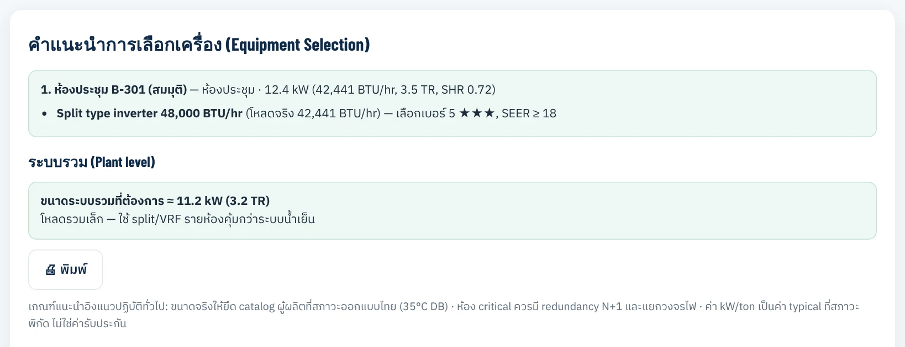
1) พื้นที่ 40.0 m² → 18 คน · Vbz = 2.5 × 18 + 0.3 × 40.0 = 57.0 L/s
2) โหลด 12.4 kW · 42,441 BTU/hr · 3.54 TR
3) SHR 0.72 (latent สูงเพราะคนแน่น) · 311 W/m²
4) แท็บ ③: Split type inverter 48,000 BTU/hr เบอร์ 5
✓ ผ่าน
ได้ตัวเลขตรงกัน = ใช้เครื่องมือเป็นแล้ว · ภาพคือการ์ดแท็บ ③ หลังเพิ่มห้องเข้าโครงการ
สรุป 1 หน้า (พิมพ์ติดไว้ข้างคอมพิวเตอร์)
คู่มือใช้งาน · คำนวณโหลดความเย็นและเลือกเครื่องปรับอากาศ (Cooling Load & HVAC Selector) · ระดับ Free
28 / 28
1
แท็บ ①
ประเภทห้องก่อน → ขนาด · คน · ไฟ · อุปกรณ์ · สภาวะ
2
Quick
สภาพห้อง · W/m² → ประมาณเร็ว
3
Detailed
ผนัง/กระจกรายทิศ · หลังคา · Rp · Ra · ACH
4
แท็บ ②
เพิ่มห้อง → diversity → ระบบรวม · บันทึก JSON
5
แท็บ ③
ขนาดเครื่องรายห้องและระบบรวม
6
แท็บ ④ ⑤
พลังงานรายปี · ตารางอ้างอิง
อ่านผลแล้วตรวจ
☐
1 TR = 12,000 BTU/hr ≈ 3.517 kW
☐
Vbz = Rp·Pz + Ra·Az
☐
Qs = 1.2 × V × ΔT
☐
กล่องเตือน W/m² = ตรวจคน/กระจก/ทิศ
☐
ป้ายค่าแนวทาง = ตรวจข้อกำหนดงาน
☐
ห้อง Server: กรอก IT kW ก่อน
อ.หนึ่ง กลับทวี / Aj. Nueng Klubtavee
tripleeenergytools.com
tripleeenergytools.com